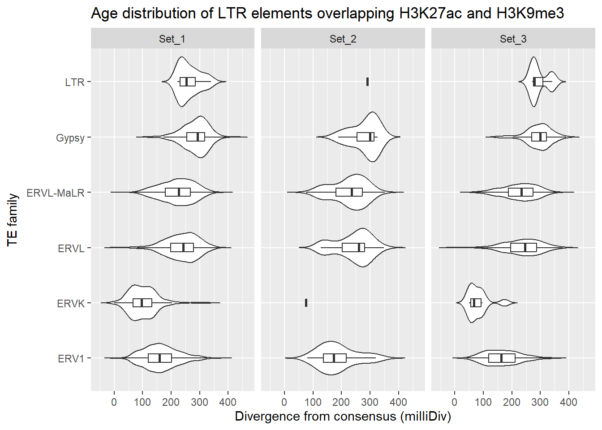
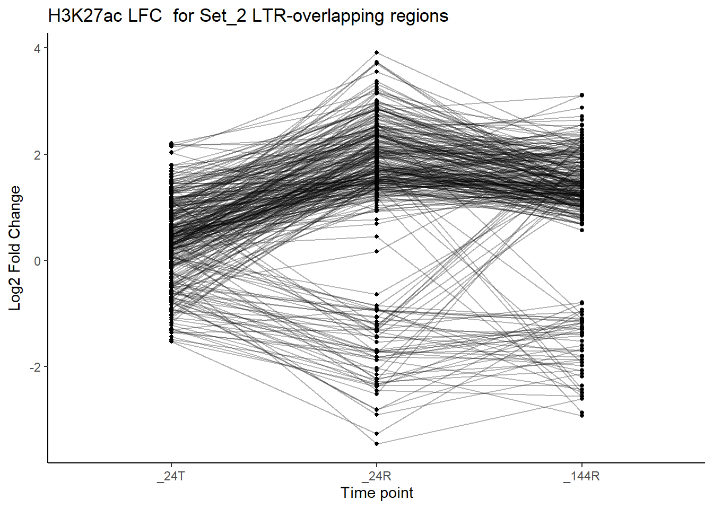
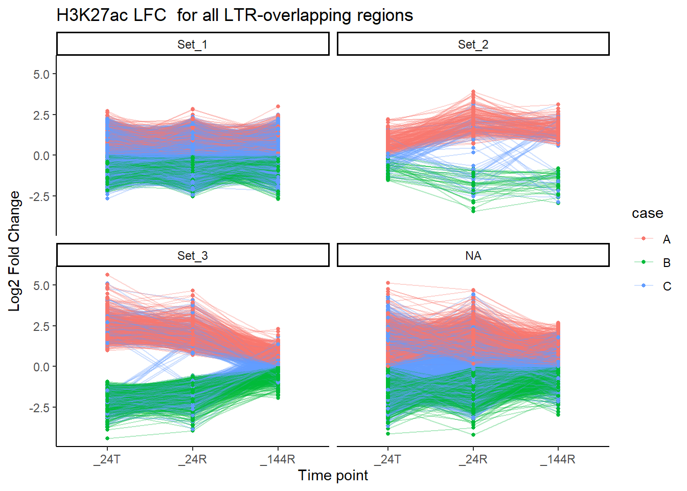
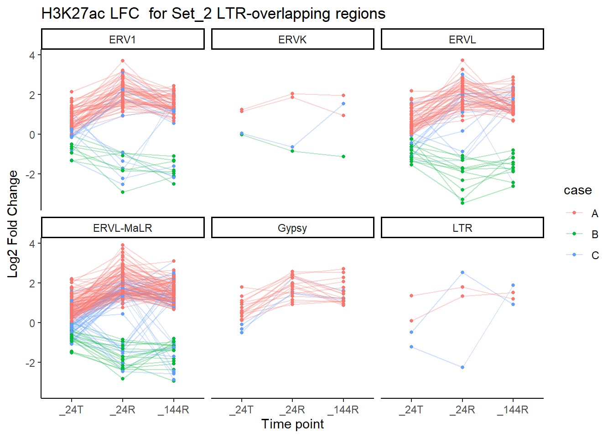
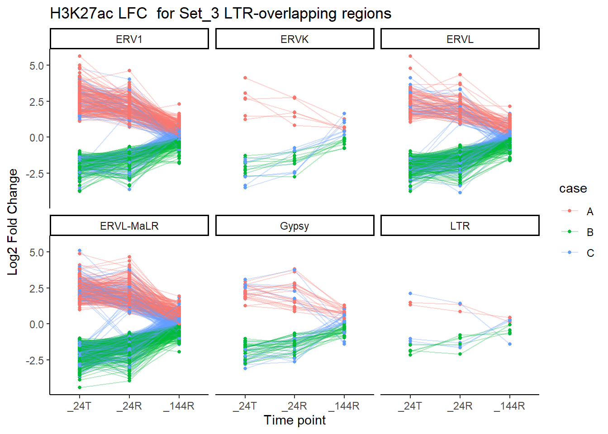
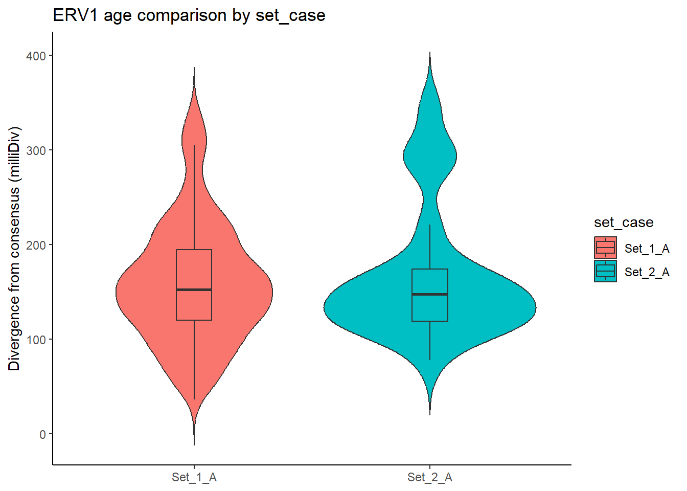
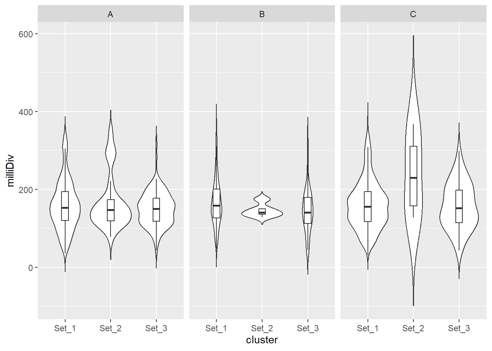
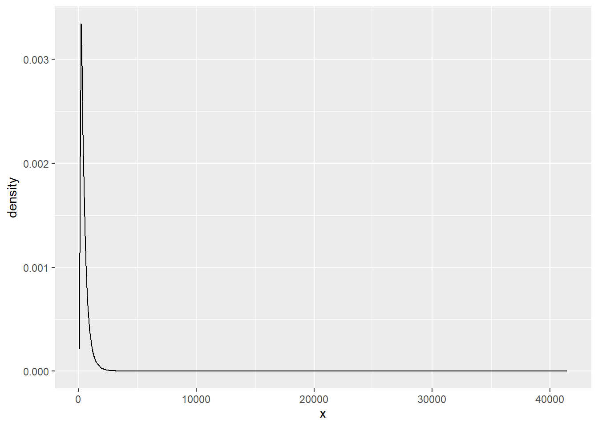
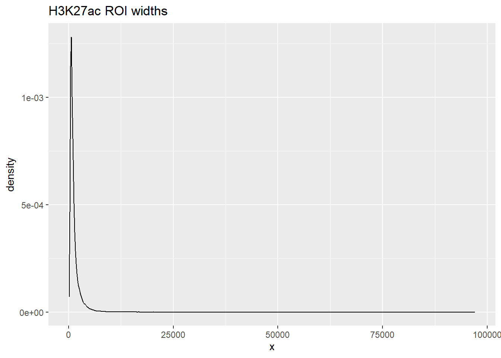

H3K27ac and TE overlap
Renee Matthews
2026-02-17
Last updated: 2026-02-17
Checks: 7 0
Knit directory: DXR_continue/
This reproducible R Markdown analysis was created with workflowr (version 1.7.1). The Checks tab describes the reproducibility checks that were applied when the results were created. The Past versions tab lists the development history.
Great! Since the R Markdown file has been committed to the Git repository, you know the exact version of the code that produced these results.
Great job! The global environment was empty. Objects defined in the global environment can affect the analysis in your R Markdown file in unknown ways. For reproduciblity it’s best to always run the code in an empty environment.
The command set.seed(20250701) was run prior to running
the code in the R Markdown file. Setting a seed ensures that any results
that rely on randomness, e.g. subsampling or permutations, are
reproducible.
Great job! Recording the operating system, R version, and package versions is critical for reproducibility.
Nice! There were no cached chunks for this analysis, so you can be confident that you successfully produced the results during this run.
Great job! Using relative paths to the files within your workflowr project makes it easier to run your code on other machines.
Great! You are using Git for version control. Tracking code development and connecting the code version to the results is critical for reproducibility.
The results in this page were generated with repository version 3485bd7. See the Past versions tab to see a history of the changes made to the R Markdown and HTML files.
Note that you need to be careful to ensure that all relevant files for
the analysis have been committed to Git prior to generating the results
(you can use wflow_publish or
wflow_git_commit). workflowr only checks the R Markdown
file, but you know if there are other scripts or data files that it
depends on. Below is the status of the Git repository when the results
were generated:
Ignored files:
Ignored: .Rhistory
Ignored: .Rproj.user/
Ignored: data/Bed_exports/
Ignored: data/Cormotif_data/
Ignored: data/DER_data/
Ignored: data/Other_paper_data/
Ignored: data/RDS_files/
Ignored: data/TE_annotation/
Ignored: data/alignment_summary.txt
Ignored: data/all_peak_final_dataframe.txt
Ignored: data/cell_line_info_.tsv
Ignored: data/full_summary_QC_metrics.txt
Ignored: data/motif_lists/
Ignored: data/number_frag_peaks_summary.txt
Untracked files:
Untracked: H3K27ac_all_regions_test.bed
Untracked: H3K27ac_consensus_clusters_test.bed
Untracked: analysis/GREAT_H3K27ac.Rmd
Untracked: analysis/H3K27ac_ChromHMM_FC.Rmd
Untracked: analysis/H3K27me3_TE_investigation.Rmd
Untracked: analysis/H3K36me3_TE_investigation.Rmd
Untracked: analysis/Top2a_Top2b_expression.Rmd
Untracked: analysis/maps_and_plots.Rmd
Untracked: analysis/proteomics.Rmd
Untracked: code/For_john.R
Untracked: other_analysis/
Unstaged changes:
Modified: analysis/H3K27ac_summit_processing.Rmd
Modified: analysis/H3K9me3_TE_investigation.Rmd
Modified: analysis/H3K9me3_TE_overlap.Rmd
Modified: analysis/dual_histone_TE_investigation.Rmd
Modified: analysis/summit_files_processing.Rmd
Note that any generated files, e.g. HTML, png, CSS, etc., are not included in this status report because it is ok for generated content to have uncommitted changes.
These are the previous versions of the repository in which changes were
made to the R Markdown
(analysis/H3K27ac_TE_investigation.Rmd) and HTML
(docs/H3K27ac_TE_investigation.html) files. If you’ve
configured a remote Git repository (see ?wflow_git_remote),
click on the hyperlinks in the table below to view the files as they
were in that past version.
| File | Version | Author | Date | Message |
|---|---|---|---|---|
| Rmd | 3485bd7 | reneeisnowhere | 2026-02-17 | wflow_publish("analysis/H3K27ac_TE_investigation.Rmd") |
| html | 9a1e513 | reneeisnowhere | 2026-02-17 | Build site. |
| Rmd | b5563e8 | reneeisnowhere | 2026-02-17 | wflow_publish("analysis/H3K27ac_TE_investigation.Rmd") |
| html | 1a85f13 | reneeisnowhere | 2026-02-17 | Build site. |
| Rmd | e518d21 | reneeisnowhere | 2026-02-17 | add no color |
| html | 3a5cba8 | reneeisnowhere | 2026-02-06 | Build site. |
| Rmd | 658bc77 | reneeisnowhere | 2026-02-06 | wflow_publish("analysis/H3K27ac_TE_investigation.Rmd") |
| html | 81af285 | reneeisnowhere | 2026-02-04 | Build site. |
| Rmd | 19b0fd5 | reneeisnowhere | 2026-02-04 | wflow_publish("analysis/H3K27ac_TE_investigation.Rmd") |
| html | 3fa291d | reneeisnowhere | 2026-02-03 | Build site. |
| Rmd | 5a8af78 | reneeisnowhere | 2026-02-03 | adding LFC and color |
| html | 68a0095 | reneeisnowhere | 2026-02-02 | Build site. |
| Rmd | 343c4bf | reneeisnowhere | 2026-02-02 | first commit |
library(tidyverse)
library(GenomicRanges)
library(plyranges)
library(genomation)
library(readr)
library(rtracklayer)
library(stringr)
library(ggrepel)
library(DT)
library(ChIPseeker)
library(ggVennDiagram)
library(smplot2)
library(ggsignif)First steps: breakdown repeatmasker into groups and pull out the ones by each class I am interested in.
repeatmasker <- read_delim("data/Other_paper_data/repeatmasker_20250911.txt",
delim = "\t", escape_double = FALSE,
trim_ws = TRUE)
colnames(repeatmasker) [1] "#bin" "swScore" "milliDiv" "milliDel" "milliIns" "genoName"
[7] "genoStart" "genoEnd" "genoLeft" "strand" "repName" "repClass"
[13] "repFamily" "repStart" "repEnd" "repLeft" "id" autosomes <- paste0("chr", 1:22)
repeatmasker_clean <- repeatmasker %>% mutate(
strand = ifelse(strand == "C", "-", "+")
) %>%
mutate(
start = genoStart + 1,
end = genoEnd)%>%
mutate(repFamily= str_remove(repFamily, "\\?$")) %>%
dplyr::filter(genoName %in% autosomes) %>%
mutate(RM_id=paste0(genoName,":",start,"-",end,":",id))
rpt_split <- split(repeatmasker_clean, repeatmasker_clean$repClass)
rpt_split_gr_list <- lapply(rpt_split, function(df) {
GRanges(
seqnames = df$genoName,
ranges = IRanges(start = df$start, end = df$end),
strand = df$strand,
repName = df$repName,
repClass = df$repClass,
repFamily = df$repFamily,
swScore = df$swScore,
milliDiv = df$milliDiv,
milliDel = df$milliDel,
milliIns = df$milliIns,
RM_id = df$RM_id
)
})SINE_gr <- rpt_split_gr_list$SINE
SINE_df <- SINE_gr %>%
as.data.frame()
SINE_split_df <- split(SINE_df, SINE_df$repFamily)
LINE_gr <- rpt_split_gr_list$LINE
LINE_df <- LINE_gr %>%
as.data.frame()
LINE_split_df <- split(LINE_df, LINE_df$repFamily)
LTR_gr <- rpt_split_gr_list$LTR
LTR_df <- LTR_gr %>%
as.data.frame()
LTR_split_df <- split(LTR_df, LTR_df$repFamily)
SVA_gr <- rpt_split_gr_list$Retroposon
SVA_df <- SVA_gr %>%
as.data.frame()
SVA_split_df <- split(SVA_df, SVA_df$repFamily)
DNA_gr <- rpt_split_gr_list$DNA
DNA_df <- DNA_gr %>%
as.data.frame()
DNA_split_df <- split(DNA_df, DNA_df$repFamily)H3K27ac_summit_gr <- readRDS("data/RDS_files/H3K27ac_complete_summit_gr.RDS")
peakAnnoList_H3K27ac <- readRDS("data/motif_lists/H3K27ac_annotated_peaks.RDS")
peakAnnoList_H3K9me3 <- readRDS("data/motif_lists/H3K9me3_annotated_peaks.RDS")
H3K27ac_lookup <- imap_dfr(peakAnnoList_H3K27ac[1:3], ~
tibble(Peakid = .x@anno$Peakid, cluster = .y))
H3K9me3_lookup <- imap_dfr(peakAnnoList_H3K9me3[1:3], ~
tibble(Peakid = .x@anno$Peakid, cluster = .y))
H3K27ac_sets_gr <- lapply(peakAnnoList_H3K27ac, function(df) {
as_granges(df)
})
H3K9me3_sets_gr <- lapply(peakAnnoList_H3K9me3, function(df) {
as_granges(df)
})
##assigning Peakid as name of summit region
mcols(H3K27ac_summit_gr)$name <- mcols(H3K27ac_summit_gr)$Peakid
comparisons <- tibble(
cluster2 = c("Set_2", "Set_3"),
cluster1 = c("Set_1", "Set_1")
)H3K9me3_toplist <- readRDS( "data/DER_data/H3K9me3_toplist_nooutlier.RDS")
H3K27ac_toplist <- readRDS( "data/DER_data/H3K27ac_toplist.RDS")
H3K27ac_toptable_list <- bind_rows(H3K27ac_toplist, .id = "group")
H3K9me3_toptable_list <- bind_rows(H3K9me3_toplist, .id = "group")
K9me3_lfctable <- H3K9me3_toptable_list %>%
dplyr::select(group,genes, logFC) %>%
pivot_wider(.,id_cols = genes, names_from = group, values_from = logFC) %>%
dplyr::left_join(H3K9me3_lookup, by =c("genes"="Peakid")) %>%
mutate(case= case_when(H3K9me3_24T > 0 & H3K9me3_24R >0 & H3K9me3_144R>0~"A",
H3K9me3_24T < 0 & H3K9me3_24R <0 & H3K9me3_144R<0~"B",
TRUE ~ "C")) %>%
mutate(set_case=paste0(cluster,"_",case))
K27ac_lfctable <- H3K27ac_toptable_list %>%
dplyr::select(group,genes, logFC) %>%
pivot_wider(.,id_cols = genes, names_from = group, values_from = logFC) %>%
dplyr::left_join(H3K27ac_lookup,by =c("genes"="Peakid")) %>%
mutate(case= case_when(H3K27ac_24T > 0 & H3K27ac_24R >0 & H3K27ac_144R>0~"A",
H3K27ac_24T < 0 & H3K27ac_24R <0 & H3K27ac_144R<0~"B",
TRUE ~ "C")) %>%
mutate(set_case=paste0(cluster,"_",case))
set_case_list_H3K27ac <- H3K27ac_toptable_list %>%
dplyr::select(group,genes, logFC) %>%
pivot_wider(.,id_cols = genes, names_from = group, values_from = logFC) %>%
dplyr::left_join(H3K27ac_lookup,by =c("genes"="Peakid")) %>%
mutate(case= case_when(H3K27ac_24T > 0 & H3K27ac_24R >0 & H3K27ac_144R>0~"A",
H3K27ac_24T < 0 & H3K27ac_24R <0 & H3K27ac_144R<0~"B",
TRUE ~ "C")) %>%
mutate(set_case=paste0(cluster,"_",case)) %>%
dplyr::select(genes, cluster,case,set_case)
cluster_colors <- c("Set_1" = "#d93e40","Set_2" = "#1c9f50","Set_3" = "#3570b3","NA" ="grey70")# Generic pairwise Fisher test
test_pair_TE_generic <- function(df_long, te_name, cluster1, cluster2) {
sub_df <- df_long %>%
filter(TE_type == te_name) %>%
complete(
cluster = c(cluster1, cluster2),
status = c("TE", "not_TE"),
fill = list(count = 0))
# enforce fixed order
status_levels <- c("TE", "not_TE")
# assume "status" column has TE vs wnot_TE automatically
statuses <- unique(sub_df$status)
if(length(statuses) != 2) {
# ensure we have exactly two categories, fill missing with 0
sub_df <- sub_df %>%
complete(cluster, status, fill = list(count = 0))
statuses <- unique(sub_df$status)
}
# extract counts for cluster1
c1_counts <- sub_df %>%
filter(cluster == cluster1) %>%
arrange(factor(status, levels = status_levels)) %>% # ensure same order
pull(count)
# extract counts for cluster2
c2_counts <- sub_df %>%
filter(cluster == cluster2) %>%
arrange(factor(status, levels = status_levels)) %>%
pull(count)
# build 2x2 matrix
mat <- matrix(
c(c2_counts, c1_counts),
nrow = 2,
byrow = TRUE,
dimnames = list(
cluster = c(cluster2, cluster1),
category = status_levels
)
)
ft <- tryCatch(
fisher.test(mat, workspace = 2e8),
error = function(e) fisher.test(mat, simulate.p.value = TRUE, B = 1e5)
)
tibble(
TE_type = te_name,
comparison = paste(cluster2, "vs", cluster1),
odds_ratio = ft$estimate,
lower_CI = ft$conf.int[1],
upper_CI = ft$conf.int[2],
p_value = ft$p.value
)
}SINE
Overlapping SINE family with ROIs
sine_hits <- findOverlaps(H3K27ac_sets_gr$all_H3K27ac, SINE_gr, ignore.strand = TRUE)
SINE_overlap_df <- tibble(
peak_row = queryHits(sine_hits),
Peakid = H3K27ac_sets_gr$all_H3K27ac$Peakid[queryHits(sine_hits)],
cluster = H3K27ac_sets_gr$all_H3K27ac$cluster[queryHits(sine_hits)],
repClass = SINE_gr$repClass[subjectHits(sine_hits)],
repName = SINE_gr$repName[subjectHits(sine_hits)],
TE_type = ifelse(
SINE_gr$repFamily[subjectHits(sine_hits)] == "SVA",
SINE_gr$repName[subjectHits(sine_hits)],
SINE_gr$repFamily[subjectHits(sine_hits)]
),
milliDiv = SINE_gr$milliDiv[subjectHits(sine_hits)],
milliDel = SINE_gr$milliDel[subjectHits(sine_hits)],
milliIns = SINE_gr$milliIns[subjectHits(sine_hits)]
)
SINE_overlap_df %>%
dplyr::left_join(H3K27ac_lookup) %>%
dplyr::filter(cluster %in% c("Set_1","Set_2","Set_3")) %>%
ggplot(., aes(x = TE_type, y = milliDiv)) +
geom_violin(trim = FALSE) +
geom_boxplot(width = 0.15, outlier.shape = NA) +
coord_flip() +
labs(
y = "Divergence from consensus (milliDiv)",
x = "TE family",
title = "Age distribution of SINE elements overlapping H3K27ac"
)+
facet_wrap(~cluster)
| Version | Author | Date |
|---|---|---|
| 68a0095 | reneeisnowhere | 2026-02-02 |
SINE_overlap_df %>%
dplyr::left_join(H3K27ac_lookup) %>%
dplyr::filter(cluster %in% c("Set_1","Set_2","Set_3")) %>%
ggplot(., aes(x = cluster, y = milliDiv)) +
geom_violin(trim = FALSE) +
geom_boxplot(width = 0.15, outlier.shape = NA) +
coord_flip() +
labs(
y = "Divergence from consensus (milliDiv)",
x = "TE family",
title = "Age distribution of SINE elements overlapping H3K27ac"
)+
facet_wrap(~repName)
| Version | Author | Date |
|---|---|---|
| 68a0095 | reneeisnowhere | 2026-02-02 |
LINE
Overlapping LINE family with ROIs
LINE_hits <- findOverlaps(H3K27ac_sets_gr$all_H3K27ac, LINE_gr, ignore.strand = TRUE)
LINE_overlap_df <- tibble(
peak_row = queryHits(LINE_hits),
Peakid = H3K27ac_sets_gr$all_H3K27ac$Peakid[queryHits(LINE_hits)],
cluster = H3K27ac_sets_gr$all_H3K27ac$cluster[queryHits(LINE_hits)],
repClass = LINE_gr$repClass[subjectHits(LINE_hits)],
repName = LINE_gr$repName[subjectHits(LINE_hits)],
TE_type = ifelse(
LINE_gr$repFamily[subjectHits(LINE_hits)] == "SVA",
LINE_gr$repName[subjectHits(LINE_hits)],
LINE_gr$repFamily[subjectHits(LINE_hits)]
),
milliDiv = LINE_gr$milliDiv[subjectHits(LINE_hits)],
milliDel = LINE_gr$milliDel[subjectHits(LINE_hits)],
milliIns = LINE_gr$milliIns[subjectHits(LINE_hits)]
)
LINE_overlap_df %>%
dplyr::left_join(H3K27ac_lookup) %>%
dplyr::filter(cluster %in% c("Set_1","Set_2","Set_3")) %>%
ggplot(., aes(x = TE_type, y = milliDiv)) +
geom_violin(trim = FALSE) +
geom_boxplot(width = 0.15, outlier.shape = NA) +
coord_flip() +
labs(
y = "Divergence from consensus (milliDiv)",
x = "TE family",
title = "Age distribution of LINE elements overlapping H3K27ac"
)+
facet_wrap(~cluster)
| Version | Author | Date |
|---|---|---|
| 68a0095 | reneeisnowhere | 2026-02-02 |
LTR
Overlapping LTR family with ROIs
LTR_hits <- findOverlaps(H3K27ac_sets_gr$all_H3K27ac, LTR_gr, ignore.strand = TRUE)
LTR_overlap_df <- tibble(
peak_row = queryHits(LTR_hits),
Peakid = H3K27ac_sets_gr$all_H3K27ac$Peakid[queryHits(LTR_hits)],
cluster = H3K27ac_sets_gr$all_H3K27ac$cluster[queryHits(LTR_hits)],
repClass = LTR_gr$repClass[subjectHits(LTR_hits)],
repName = LTR_gr$repName[subjectHits(LTR_hits)],
RM_id = LTR_gr$RM_id[subjectHits(LTR_hits)],
TE_type = ifelse(
LTR_gr$repFamily[subjectHits(LTR_hits)] == "SVA",
LTR_gr$repName[subjectHits(LTR_hits)],
LTR_gr$repFamily[subjectHits(LTR_hits)]
),
milliDiv = LTR_gr$milliDiv[subjectHits(LTR_hits)],
milliDel = LTR_gr$milliDel[subjectHits(LTR_hits)],
milliIns = LTR_gr$milliIns[subjectHits(LTR_hits)]
)
LTR_overlap_df %>%
dplyr::left_join(H3K27ac_lookup) %>%
dplyr::filter(cluster %in% c("Set_1","Set_2","Set_3")) %>%
ggplot(., aes(x = cluster, y = milliDiv)) +
geom_violin(trim = FALSE) +
geom_boxplot(width = 0.15, outlier.shape = NA) +
coord_flip() +
labs(
y = "Divergence from consensus (milliDiv)",
x = "TE family",
title = "Age distribution of LTR elements overlapping H3K27ac"
)+
facet_wrap(~TE_type)
# saveRDS(LTR_overlap_df,"data/RDS_files/H3K27ac_Full_ROI_overlap_LTRs.RDS")age tests
First test, within each TE family (ERVL, ERVK, etc…)do Set1,Set2 and Set3 differ?
age_kw <- LTR_overlap_df %>%
left_join(H3K27ac_lookup) %>%
filter(cluster %in% c("Set_1","Set_2","Set_3")) %>%
group_by(TE_type) %>%
summarise(
kw_p = kruskal.test(milliDiv ~ cluster)$p.value)
age_kw# A tibble: 6 × 2
TE_type kw_p
<chr> <dbl>
1 ERV1 0.0681
2 ERVK 0.945
3 ERVL 0.0290
4 ERVL-MaLR 0.0223
5 Gypsy 0.211
6 LTR 0.0482The answer shows for ERVL, ERVL-MaLR, and LTR, yes age difference differ between sets. now to look at ERVL,ERVL-MaLR and LTR individually
test_TE_age_pairs <- function(df,
TE_type_query,
sets = c("Set_1", "Set_2", "Set_3")) {
sub_df <- df %>%
dplyr::left_join(H3K27ac_lookup) %>%
dplyr::filter(
TE_type == TE_type_query,
cluster %in% sets,
!is.na(milliDiv)
)
# Medians first (ground truth)
med_df <- sub_df %>%
dplyr::group_by(cluster) %>%
dplyr::summarise(
median_age = median(milliDiv, na.rm = TRUE),
n = dplyr::n(),
.groups = "drop"
)
# Pairwise Wilcoxon
pw <- pairwise.wilcox.test(
x = sub_df$milliDiv,
g = sub_df$cluster,
p.adjust.method = "BH"
)
# Tidy + enforce symmetric pairs
pw_df <- as.data.frame(as.table(pw$p.value)) %>%
dplyr::filter(!is.na(Freq)) %>%
dplyr::rename(
set_A = Var1,
set_B = Var2,
p_adj = Freq
)
# Join medians *by value*, not position
pw_df %>%
dplyr::left_join(med_df, by = c("set_A" = "cluster")) %>%
dplyr::rename(median_A = median_age, n_A = n) %>%
dplyr::left_join(med_df, by = c("set_B" = "cluster")) %>%
dplyr::rename(median_B = median_age, n_B = n) %>%
dplyr::mutate(
older_set = dplyr::case_when(
median_A > median_B ~ set_A,
median_B > median_A ~ set_B,
TRUE ~ "equal"
),
TE_type = TE_type_query
)
}test_TE_age_pairs(LTR_overlap_df, "ERV1") set_A set_B p_adj median_A n_A median_B n_B older_set TE_type
1 Set_2 Set_1 0.09778575 165 107 157 6385 Set_2 ERV1
2 Set_3 Set_1 0.33055165 160 642 157 6385 Set_3 ERV1
3 Set_3 Set_2 0.14838385 160 642 165 107 Set_2 ERV1test_TE_age_pairs(LTR_overlap_df, "ERVK") set_A set_B p_adj median_A n_A median_B n_B older_set TE_type
1 Set_2 Set_1 1 77 4 90 537 Set_1 ERVK
2 Set_3 Set_1 1 93 25 90 537 Set_3 ERVK
3 Set_3 Set_2 1 93 25 77 4 Set_3 ERVKtest_TE_age_pairs(LTR_overlap_df, "ERVL") set_A set_B p_adj median_A n_A median_B n_B older_set TE_type
1 Set_2 Set_1 0.42714314 251 91 242 6318 Set_2 ERVL
2 Set_3 Set_1 0.04056578 250 504 242 6318 Set_3 ERVL
3 Set_3 Set_2 0.99418468 250 504 251 91 Set_2 ERVLtest_TE_age_pairs(LTR_overlap_df, "ERVL-MaLR") set_A set_B p_adj median_A n_A median_B n_B older_set TE_type
1 Set_2 Set_1 0.17332708 239 197 227 10698 Set_2 ERVL-MaLR
2 Set_3 Set_1 0.06074938 235 945 227 10698 Set_3 ERVL-MaLR
3 Set_3 Set_2 0.60549175 235 945 239 197 Set_2 ERVL-MaLRtest_TE_age_pairs(LTR_overlap_df, "LTR") set_A set_B p_adj median_A n_A median_B n_B older_set TE_type
1 Set_2 Set_1 0.56351607 278.5 4 264.0 92 Set_2 LTR
2 Set_3 Set_1 0.04873491 282.0 13 264.0 92 Set_3 LTR
3 Set_3 Set_2 0.46137897 282.0 13 278.5 4 Set_3 LTRDNA
Overlapping DNA family with ROIs
DNA_hits <- findOverlaps(H3K27ac_sets_gr$all_H3K27ac, DNA_gr, ignore.strand = TRUE)
DNA_overlap_df <- tibble(
peak_row = queryHits(DNA_hits),
Peakid = H3K27ac_sets_gr$all_H3K27ac$Peakid[queryHits(DNA_hits)],
cluster = H3K27ac_sets_gr$all_H3K27ac$cluster[queryHits(DNA_hits)],
repClass = DNA_gr$repClass[subjectHits(DNA_hits)],
repName = DNA_gr$repName[subjectHits(DNA_hits)],
TE_type = ifelse(
DNA_gr$repFamily[subjectHits(DNA_hits)] == "SVA",
DNA_gr$repName[subjectHits(DNA_hits)],
DNA_gr$repFamily[subjectHits(DNA_hits)]
),
milliDiv = DNA_gr$milliDiv[subjectHits(DNA_hits)],
milliDel = DNA_gr$milliDel[subjectHits(DNA_hits)],
milliIns = DNA_gr$milliIns[subjectHits(DNA_hits)]
)
DNA_overlap_df %>%
dplyr::left_join(H3K27ac_lookup) %>%
dplyr::filter(cluster %in% c("Set_1","Set_2","Set_3")) %>%
ggplot(., aes(x = TE_type, y = milliDiv)) +
geom_violin(trim = FALSE) +
geom_boxplot(width = 0.15, outlier.shape = NA) +
coord_flip() +
labs(
y = "Divergence from consensus (milliDiv)",
x = "TE family",
title = "Age distribution of DNA elements overlapping H3K27ac"
)+
facet_wrap(~cluster)
| Version | Author | Date |
|---|---|---|
| 68a0095 | reneeisnowhere | 2026-02-02 |
SVA/Retroposon
Overlapping SVA family with ROIs
SVA_hits <- findOverlaps(H3K27ac_sets_gr$all_H3K27ac, SVA_gr, ignore.strand = TRUE)
SVA_overlap_df <- tibble(
peak_row = queryHits(SVA_hits),
Peakid = H3K27ac_sets_gr$all_H3K27ac$Peakid[queryHits(SVA_hits)],
cluster = H3K27ac_sets_gr$all_H3K27ac$cluster[queryHits(SVA_hits)],
repClass = SVA_gr$repClass[subjectHits(SVA_hits)],
repName = SVA_gr$repName[subjectHits(SVA_hits)],
TE_type = ifelse(
SVA_gr$repFamily[subjectHits(SVA_hits)] == "SVA",
SVA_gr$repName[subjectHits(SVA_hits)],
SVA_gr$repFamily[subjectHits(SVA_hits)]
),
milliDiv = SVA_gr$milliDiv[subjectHits(SVA_hits)],
milliDel = SVA_gr$milliDel[subjectHits(SVA_hits)],
milliIns = SVA_gr$milliIns[subjectHits(SVA_hits)]
)
SVA_overlap_df %>%
dplyr::left_join(H3K27ac_lookup) %>%
dplyr::filter(cluster %in% c("Set_1","Set_2","Set_3")) %>%
ggplot(., aes(x = TE_type, y = milliDiv)) +
geom_violin(trim = FALSE) +
geom_boxplot(width = 0.15, outlier.shape = NA) +
coord_flip() +
labs(
y = "Divergence from consensus (milliDiv)",
x = "TE family",
title = "Age distribution of SVA elements overlapping H3K27ac"
)+
facet_wrap(~cluster)
| Version | Author | Date |
|---|---|---|
| 68a0095 | reneeisnowhere | 2026-02-02 |
Looking for overlapping information: LTR specific
Here I am exploring H3K27ac ROIs which overlap LTRs and also overlap H3K9me3 ROIs, then exploring LFC of the H3K27ac ROI sets across families of LTRs. First I wanted to know how many H3K27ac ROIs overlap LTRs, and how many of those LTRs overlap more than one ROI:
LTR_overlap_df %>%
count(Peakid, name = "n_peaks") %>%
count(n_peaks)# A tibble: 12 × 2
n_peaks n
<int> <int>
1 1 18389
2 2 4997
3 3 1468
4 4 432
5 5 144
6 6 56
7 7 26
8 8 8
9 9 8
10 10 3
11 11 1
12 12 1LTR_only_K27ac_peakids <- LTR_overlap_df %>% distinct(Peakid)I then overlapped ROIs with H3K9me3 ROIs to see how many H3K9me3 ROIs overlap H3K27ac ROIs. (interpret with n_peaks being how many H3K27ac ROIs and n being number of H3K9me3 ROIS, So 33,567 K9me3 rOIs overlap 1 H3K27me3
K9me3_hits <- findOverlaps(H3K27ac_sets_gr$all_H3K27ac, H3K9me3_sets_gr$all_H3K9me3_regions, ignore.strand = TRUE)
K9me3_overlap_df <- tibble(
peak_row = queryHits(K9me3_hits),
Peakid = H3K27ac_sets_gr$all_H3K27ac$Peakid[queryHits(K9me3_hits)],
cluster = H3K27ac_sets_gr$all_H3K27ac$cluster[queryHits(K9me3_hits)],
ROI_K9me3 = H3K9me3_sets_gr$all_H3K9me3_regions$Peakid[subjectHits(K9me3_hits)])
K9me3_overlap_df %>%
count(Peakid, name = "n_peaks") %>%
count(n_peaks)# A tibble: 17 × 2
n_peaks n
<int> <int>
1 1 33567
2 2 5184
3 3 1072
4 4 303
5 5 161
6 6 59
7 7 38
8 8 20
9 9 11
10 10 8
11 11 12
12 12 3
13 13 4
14 14 1
15 15 4
16 16 3
17 17 2K9me3_only_K27ac_peakids <- K9me3_overlap_df %>% distinct(Peakid)Now to filter and connect H3K27ac ROIs, that overlap LTRs and at least one H3K9me3
LTR_overlap_df %>%
dplyr::filter(Peakid %in% K9me3_only_K27ac_peakids$Peakid) %>% distinct(RM_id)# A tibble: 12,645 × 1
RM_id
<chr>
1 chr1:1003379-1003425:1
2 chr1:1003500-1003623:1
3 chr1:1005447-1005607:1
4 chr1:1017170-1018876:1
5 chr1:1214911-1215005:1
6 chr1:1235837-1235999:1
7 chr1:1259547-1259908:1
8 chr1:1357233-1357526:1
9 chr1:1357817-1357890:1
10 chr1:1382090-1382288:1
# ℹ 12,635 more rowsLFC of those regions
LTR_overlap_df %>%
dplyr::filter(Peakid %in% K9me3_only_K27ac_peakids$Peakid) %>%
left_join(., K27ac_lfctable, by = c("Peakid"="genes")) %>%
group_by(TE_type) %>%
tally() %>%
ungroup() %>%
DT::datatable(
rownames = FALSE,
caption = htmltools::tags$caption(
style = "caption-side: top; text-align: left;",
"H3K27ac LTR specific overlap counts by TE familiy which also overlap H3K9me3"),
options = list(pageLength = 10,
autoWidth = TRUE,
dom = "tip"))LTR_overlap_df %>%
dplyr::left_join(H3K27ac_lookup) %>%
dplyr::filter(Peakid %in% K9me3_only_K27ac_peakids$Peakid) %>%
dplyr::filter(cluster %in% c("Set_1","Set_2","Set_3")) %>%
ggplot(., aes(x = TE_type, y = milliDiv)) +
geom_violin(trim = FALSE) +
geom_boxplot(width = 0.15, outlier.shape = NA) +
coord_flip() +
labs(
y = "Divergence from consensus (milliDiv)",
x = "TE family",
title = "Age distribution of LTR elements overlapping H3K27ac and H3K9me3"
)+
facet_wrap(~cluster)
| Version | Author | Date |
|---|---|---|
| 81af285 | reneeisnowhere | 2026-02-04 |
LTR_K9me3_H3K27ac_lfc <- LTR_overlap_df %>%
left_join(., K27ac_lfctable, by = c("Peakid"="genes")) %>%
dplyr::filter(Peakid %in% K9me3_only_K27ac_peakids$Peakid)plot_K27_family <- function(lfc_df,
grp="H3K27ac",
repFamily,
fam_name){
lfc_df %>%
dplyr::filter(Peakid %in% K9me3_only_K27ac_peakids$Peakid) %>%
dplyr::filter(.data$TE_type %in% fam_name) %>%
dplyr::filter(cluster != "NA") %>%
pivot_longer(.,cols=c(starts_with(grp)), names_to="group", values_to = "LFC") %>%
group_by(cluster, group) %>%
summarise(median_abs_LFC = median(abs(LFC), na.rm = TRUE),
.groups = "drop")%>%
mutate(time=str_remove(group,grp))%>%
mutate(time=factor(time, levels=c("_24T","_24R","_144R"))) %>%
ggplot(., aes(x=time, y=median_abs_LFC, group=cluster, color=cluster))+
geom_point(size=4)+
geom_line(aes(alpha = 0.8, linewidth = 4))+
theme_bw()+
ggtitle(paste0(grp," absolute LFC overlapping ",repFamily,":",fam_name))
}plot_K27_family(LTR_K9me3_H3K27ac_lfc,"H3K27ac","LTR","ERV1")+
scale_color_manual(values = cluster_colors, drop = FALSE)
| Version | Author | Date |
|---|---|---|
| 68a0095 | reneeisnowhere | 2026-02-02 |
plot_K27_family(LTR_K9me3_H3K27ac_lfc,"H3K27ac","LTR","ERVK")+
scale_color_manual(values = cluster_colors, drop = FALSE)
| Version | Author | Date |
|---|---|---|
| 68a0095 | reneeisnowhere | 2026-02-02 |
plot_K27_family(LTR_K9me3_H3K27ac_lfc,"H3K27ac","LTR","ERVL")+
scale_color_manual(values = cluster_colors, drop = FALSE)
| Version | Author | Date |
|---|---|---|
| 68a0095 | reneeisnowhere | 2026-02-02 |
plot_K27_family(LTR_K9me3_H3K27ac_lfc,"H3K27ac","LTR","Gypsy")+
scale_color_manual(values = cluster_colors, drop = FALSE)
| Version | Author | Date |
|---|---|---|
| 68a0095 | reneeisnowhere | 2026-02-02 |
plot_K27_family(LTR_K9me3_H3K27ac_lfc,"H3K27ac","LTR","ERVL-MaLR")+
scale_color_manual(values = cluster_colors, drop = FALSE)
| Version | Author | Date |
|---|---|---|
| 68a0095 | reneeisnowhere | 2026-02-02 |
plot_K27_family(LTR_K9me3_H3K27ac_lfc,"H3K27ac","LTR","LTR")+
scale_color_manual(values = cluster_colors, drop = FALSE)
| Version | Author | Date |
|---|---|---|
| 68a0095 | reneeisnowhere | 2026-02-02 |
Raw LFC exploration
This will look at Raw LFC for all H3K27ac ROIs that overlap an LTR
LTR_overlap_df %>%
left_join(., K27ac_lfctable, by = c("Peakid"="genes")) %>%
pivot_longer(.,cols=c(starts_with("H3K27ac")), names_to="group", values_to = "LFC") %>%
group_by(cluster, group) %>%
# summarise(median_LFC = median(LFC), na.rm = TRUE),
# .groups = "drop")%>%
dplyr::filter(cluster=="Set_2") %>%
mutate(time=str_remove(group,"H3K27ac"))%>%
mutate(time=factor(time, levels=c("_24T","_24R","_144R"))) %>%
ggplot(., aes(x=time, y = LFC, group=Peakid))+
geom_line(alpha = 0.3) +
geom_point(size = 1) +
theme_classic() +
labs(
x = "Time point",
y = "Log2 Fold Change",
title = "H3K27ac LFC for Set_2 LTR-overlapping regions")
| Version | Author | Date |
|---|---|---|
| 81af285 | reneeisnowhere | 2026-02-04 |
LTR_overlap_df %>%
left_join(., K27ac_lfctable, by = c("Peakid"="genes")) %>%
pivot_longer(.,cols=c(starts_with("H3K27ac")), names_to="group", values_to = "LFC") %>%
group_by(cluster, group) %>%
# summarise(median_LFC = median(LFC), na.rm = TRUE),
# .groups = "drop")%>%
# dplyr::filter(cluster=="Set_3") %>%
mutate(time=str_remove(group,"H3K27ac"))%>%
mutate(time=factor(time, levels=c("_24T","_24R","_144R"))) %>%
ggplot(., aes(x=time, y = LFC, group=Peakid, color=case))+
geom_line(alpha = 0.3) +
geom_point(size = 1) +
theme_classic() +
facet_wrap(~cluster)+
labs(
x = "Time point",
y = "Log2 Fold Change",
title = "H3K27ac LFC for all LTR-overlapping regions")
| Version | Author | Date |
|---|---|---|
| 81af285 | reneeisnowhere | 2026-02-04 |
Getting some number about how many, etc…
LTR_overlap_df %>%
dplyr::left_join(H3K27ac_lookup) %>%
group_by(TE_type,cluster) %>%
tally() %>%
pivot_wider(id_cols = TE_type, names_from = cluster, values_from = n) %>%
ungroup() %>%
DT::datatable(
rownames = FALSE,
caption = htmltools::tags$caption(
style = "caption-side: top; text-align: left;",
"H3K27ac LTR specific overlap counts by TE familiy"),
options = list(pageLength = 10,
autoWidth = TRUE,
dom = "tip"))now breaking out by family
LTR_overlap_df %>%
left_join(., K27ac_lfctable, by = c("Peakid"="genes")) %>%
pivot_longer(.,cols=c(starts_with("H3K27ac")), names_to="group", values_to = "LFC") %>%
group_by(cluster, group) %>%
# summarise(median_LFC = median(LFC), na.rm = TRUE),
# .groups = "drop")%>%
dplyr::filter(cluster=="Set_2") %>%
mutate(time=str_remove(group,"H3K27ac"))%>%
mutate(time=factor(time, levels=c("_24T","_24R","_144R"))) %>%
ggplot(., aes(x=time, y = LFC, group=Peakid, color=case))+
geom_line(alpha = 0.3) +
geom_point(size = 1) +
theme_classic() +
facet_wrap(~TE_type)+
labs(
x = "Time point",
y = "Log2 Fold Change",
title = "H3K27ac LFC for Set_2 LTR-overlapping regions")
| Version | Author | Date |
|---|---|---|
| 81af285 | reneeisnowhere | 2026-02-04 |
LTR_overlap_df %>%
left_join(., K27ac_lfctable, by = c("Peakid"="genes")) %>%
pivot_longer(.,cols=c(starts_with("H3K27ac")), names_to="group", values_to = "LFC") %>%
group_by(cluster, group) %>%
# summarise(median_LFC = median(LFC), na.rm = TRUE),
# .groups = "drop")%>%
dplyr::filter(cluster=="Set_3") %>%
mutate(time=str_remove(group,"H3K27ac"))%>%
mutate(time=factor(time, levels=c("_24T","_24R","_144R"))) %>%
ggplot(., aes(x=time, y = LFC, group=Peakid, color=case))+
geom_line(alpha = 0.3) +
geom_point(size = 1) +
theme_classic() +
facet_wrap(~TE_type)+
labs(
x = "Time point",
y = "Log2 Fold Change",
title = "H3K27ac LFC for Set_3 LTR-overlapping regions")
| Version | Author | Date |
|---|---|---|
| 81af285 | reneeisnowhere | 2026-02-04 |
There appears to be a lot of variation on LFC. Direction is obscuring information. I am now attempting to create a list of ROIs by set where LFC across time is always >0 (The up group), another set where LFC across time is always <0 (The down group), and the catch all mixed group.
### already added to the K27ac_lfctable
# LTR_overlap_df %>%
# dplyr::left_join(H3K27ac_lookup) %>%
# left_join(., K27ac_lfctable, by = c("Peakid"="genes")) %>%
# mutate(case= case_when(H3K27ac_24T > 0 & H3K27ac_24R >0 & H3K27ac_144R>0~"A",
# H3K27ac_24T < 0 & H3K27ac_24R <0 & H3K27ac_144R<0~"B",
# TRUE ~ "C")) %>%
# mutate(set_case=paste0(cluster,"_",case))
median_df <- K27ac_lfctable %>%
pivot_longer(.,cols=c(starts_with("H3K27ac")), names_to="group", values_to = "LFC") %>%
mutate(
time = stringr::str_remove(group, "H3K27ac"),
time = factor(time, levels = c("_24T", "_24R", "_144R"))
) %>%
group_by(cluster, time) %>%
summarise(
median_LFC = median(LFC, na.rm = TRUE),
n_peaks = dplyr::n(),
.groups = "drop")
K27ac_lfctable %>%
pivot_longer(.,cols=c(starts_with("H3K27ac")), names_to="group", values_to = "LFC") %>%
mutate(time=str_remove(group,"H3K27ac"))%>%
mutate(time=factor(time, levels=c("_24T","_24R","_144R"))) %>%
ggplot(., aes(x=time, y = LFC, group=genes, color=case))+
ggrastr::rasterise(geom_line(alpha = 0.15)) +
ggrastr::geom_point_rast(size = 1) +
geom_line(data=median_df, aes(x=time, y=median_LFC, group = cluster),inherit.aes = FALSE, linewidth =2)+
theme_classic() +
facet_wrap(~cluster)+
labs(
x = "Time point",
y = "Log2 Fold Change",
title = "H3K27ac LFC for all H3K27ac regions")
| Version | Author | Date |
|---|---|---|
| 3fa291d | reneeisnowhere | 2026-02-03 |
K27ac_lfctable %>%
pivot_longer(.,cols=c(starts_with("H3K27ac")), names_to="group", values_to = "LFC") %>%
mutate(time=str_remove(group,"H3K27ac"))%>%
mutate(time=factor(time, levels=c("_24T","_24R","_144R"))) %>%
ggplot(., aes(x=time, y = LFC, group=genes))+
ggrastr::rasterise(geom_line(alpha = 0.15,color="darkgray")) +
ggrastr::geom_point_rast(size = 1) +
geom_line(data=median_df, aes(x=time, y=median_LFC, group = cluster),inherit.aes = FALSE, linewidth =2)+
theme_classic() +
facet_wrap(~cluster)+
labs(
x = "Time point",
y = "Log2 Fold Change",
title = "H3K27ac LFC for all H3K27ac regions")
K27ac_lfctable %>%
group_by(cluster,case) %>%
tally() %>% pivot_wider(id_cols=case, names_from = cluster, values_from = n) %>%
mutate(type=case_when(case=="A"~"All LFC > 0",
case=="B" ~ "All LFC < 0",
case=="C"~"Mixed up and down LFC")) %>%
DT::datatable(
rownames = FALSE,
caption = htmltools::tags$caption(
style = "caption-side: top; text-align: left;",
"H3K27ac ROI counts stratified by LFC case"),
options = list(pageLength = 10,
autoWidth = TRUE,
dom = "tip"))H3K27ac_Sets <- K27ac_lfctable %>%
dplyr::rename("Peakid"=genes)
H3K27ac_set_case_lfc <- split(H3K27ac_Sets, H3K27ac_Sets$set_case)
# saveRDS(H3K27ac_set_case_lfc, "data/RDS_files/H3K27ac_set_case_lfc.RDS")
unique(rpt_split$`LTR`$repFamily)Zooming back in on summits,
What do LFCs of ROIs whose summits cross LTRs?
toss <- findOverlaps(H3K27ac_summit_gr, LTR_gr)
# toss %>%
# as.data.frame() %>%
# distinct(Peakid)
LTR_summits_overlap_df <- tibble(
peak_row = queryHits(toss),
Peakid = H3K27ac_summit_gr$Peakid[queryHits(toss)],
cluster = H3K27ac_sets_gr$cluster[queryHits(toss)],
repClass = LTR_gr$repClass[subjectHits(toss)],
repName = LTR_gr$repName[subjectHits(toss)],
RM_id = LTR_gr$RM_id[subjectHits(toss)],
TE_type = ifelse(
LTR_gr$repFamily[subjectHits(toss)] == "SVA",
LTR_gr$repName[subjectHits(toss)],
LTR_gr$repFamily[subjectHits(toss)]
),
milliDiv = LTR_gr$milliDiv[subjectHits(toss)],
milliDel = LTR_gr$milliDel[subjectHits(toss)],
milliIns = LTR_gr$milliIns[subjectHits(toss)]
)
summit_LTR_peakids <- LTR_summits_overlap_df %>% distinct(Peakid)
split_summit_LTR_peakids <- split(LTR_summits_overlap_df, LTR_summits_overlap_df$TE_type)
saveRDS(LTR_summits_overlap_df,"data/RDS_files/H3K27ac_summit_LTR_overlaps.RDS")med_LTR_LFC <- K27ac_lfctable %>%
dplyr::filter(genes %in% summit_LTR_peakids$Peakid) %>%
pivot_longer(.,cols=c(starts_with("H3K27ac")), names_to="group", values_to = "LFC") %>%
mutate(
time = stringr::str_remove(group, "H3K27ac"),
time = factor(time, levels = c("_24T", "_24R", "_144R"))
) %>%
group_by(cluster, time) %>%
summarise(
median_LFC = median(LFC, na.rm = TRUE),
n_peaks = dplyr::n(),
.groups = "drop")
K27ac_lfctable %>%
dplyr::filter(genes %in% summit_LTR_peakids$Peakid) %>%
pivot_longer(.,cols=c(starts_with("H3K27ac")), names_to="group", values_to = "LFC") %>%
mutate(time=str_remove(group,"H3K27ac"))%>%
mutate(time=factor(time, levels=c("_24T","_24R","_144R"))) %>%
ggplot(., aes(x=time, y = LFC, group=genes, color=case))+
ggrastr::rasterise(geom_line(alpha = 0.15)) +
ggrastr::geom_point_rast(size = 1) +
geom_line(data=med_LTR_LFC, aes(x=time, y=median_LFC, group = cluster),inherit.aes = FALSE, linewidth =2)+
theme_classic() +
facet_wrap(~cluster)+
labs(
x = "Time point",
y = "Log2 Fold Change",
title = "H3K27ac LFC for all H3K27ac regions whose summits cross an LTR")
| Version | Author | Date |
|---|---|---|
| 81af285 | reneeisnowhere | 2026-02-04 |
median_LFC_H3K27ac_group_plot <- function(lfc_df,repFam){
pid_df <- split_summit_LTR_peakids[[repFam]]
med_df <- lfc_df %>%
dplyr::filter(genes %in% pid_df$Peakid) %>%
pivot_longer(.,cols=c(starts_with("H3K27ac")), names_to="group", values_to = "LFC") %>%
mutate(
time = stringr::str_remove(group, "H3K27ac"),
time = factor(time, levels = c("_24T", "_24R", "_144R"))
) %>%
group_by(cluster, time) %>%
summarise(
median_LFC = median(LFC, na.rm = TRUE),
n_peaks = dplyr::n(),
.groups = "drop")
label_df <- med_df %>%
group_by(cluster) %>%
summarise(n_peaks = unique(n_peaks), # same for all times within a cluster
.groups = "drop") %>%
mutate(label = paste0("n = ", n_peaks),
time = "_144R", # anchor text at first x position
y = Inf ) ##place at top of panel
lfc_df %>%
dplyr::filter(genes %in% pid_df$Peakid) %>%
pivot_longer(.,cols=c(starts_with("H3K27ac")), names_to="group", values_to = "LFC") %>%
mutate(time=str_remove(group,"H3K27ac"))%>%
mutate(time=factor(time, levels=c("_24T","_24R","_144R"))) %>%
ggplot(., aes(x=time, y = LFC, group=genes, color=case))+
ggrastr::rasterise(geom_line(alpha = 0.15)) +
ggrastr::geom_point_rast(size = 1) +
geom_line(data=med_df, aes(x=time, y=median_LFC, group = cluster),inherit.aes = FALSE, linewidth =2)+
geom_text(data = label_df, aes(x = time, y = y, label = label), inherit.aes = FALSE, vjust = 1.2, hjust = .2, size = 4)+
theme_classic() +
facet_wrap(~cluster)+
labs(
x = "Time point",
y = "Log2 Fold Change",
title = paste0("H3K27ac LFC, ROI summits cross an LTR:",repFam))
}median_LFC_H3K27ac_group_plot(K27ac_lfctable,"ERVL-MaLR")
| Version | Author | Date |
|---|---|---|
| 81af285 | reneeisnowhere | 2026-02-04 |
median_LFC_H3K27ac_group_plot(K27ac_lfctable,"ERV1")
| Version | Author | Date |
|---|---|---|
| 81af285 | reneeisnowhere | 2026-02-04 |
median_LFC_H3K27ac_group_plot(K27ac_lfctable,"ERVL")
| Version | Author | Date |
|---|---|---|
| 81af285 | reneeisnowhere | 2026-02-04 |
median_LFC_H3K27ac_group_plot(K27ac_lfctable,"ERVK")
| Version | Author | Date |
|---|---|---|
| 81af285 | reneeisnowhere | 2026-02-04 |
median_LFC_H3K27ac_group_plot(K27ac_lfctable,"Gypsy")
| Version | Author | Date |
|---|---|---|
| 81af285 | reneeisnowhere | 2026-02-04 |
median_LFC_H3K27ac_group_plot(K27ac_lfctable,"LTR")
| Version | Author | Date |
|---|---|---|
| 81af285 | reneeisnowhere | 2026-02-04 |
Age questions
I had a question about age and LTRs:
age_summit_kw <- LTR_summits_overlap_df %>%
left_join(H3K27ac_lookup) %>%
filter(cluster %in% c("Set_1","Set_2","Set_3")) %>%
group_by(TE_type) %>%
summarise(
kw_p = kruskal.test(milliDiv ~ cluster)$p.value)
age_summit_kw# A tibble: 6 × 2
TE_type kw_p
<chr> <dbl>
1 ERV1 0.177
2 ERVK 0.681
3 ERVL 0.0257
4 ERVL-MaLR 0.0299
5 Gypsy 0.0835
6 LTR 0.306 test_TE_age_pairs_summits <- function(df,
TE_type_query,
sets = c("Set_1", "Set_2", "Set_3")) {
pid_df <- split_summit_LTR_peakids[[TE_type_query]]
sub_df <- pid_df %>%
dplyr::left_join(H3K27ac_lookup) %>%
dplyr::filter(
TE_type == TE_type_query,
cluster %in% sets,
!is.na(milliDiv)
)
# Medians first (ground truth)
med_df <- sub_df %>%
dplyr::group_by(cluster) %>%
dplyr::summarise(
median_age = median(milliDiv, na.rm = TRUE),
n = dplyr::n(),
.groups = "drop"
)
# Pairwise Wilcoxon
pw <- pairwise.wilcox.test(
x = sub_df$milliDiv,
g = sub_df$cluster,
p.adjust.method = "BH"
)
# Tidy + enforce symmetric pairs
pw_df <- as.data.frame(as.table(pw$p.value)) %>%
dplyr::filter(!is.na(Freq)) %>%
dplyr::rename(
set_A = Var1,
set_B = Var2,
p_adj = Freq
)
# Join medians *by value*, not position
pw_df %>%
dplyr::left_join(med_df, by = c("set_A" = "cluster")) %>%
dplyr::rename(median_A = median_age, n_A = n) %>%
dplyr::left_join(med_df, by = c("set_B" = "cluster")) %>%
dplyr::rename(median_B = median_age, n_B = n) %>%
dplyr::mutate(
older_set = dplyr::case_when(
median_A > median_B ~ set_A,
median_B > median_A ~ set_B,
TRUE ~ "equal"
),
TE_type = TE_type_query
)
}testing age pairs between ROI summits
test_TE_age_pairs_summits(LTR_summits_overlap_df, "ERVL") set_A set_B p_adj median_A n_A median_B n_B older_set TE_type
1 Set_2 Set_1 0.55190415 254 33 244 2137 Set_2 ERVL
2 Set_3 Set_1 0.02482948 256 136 244 2137 Set_3 ERVL
3 Set_3 Set_2 0.55190415 256 136 254 33 Set_3 ERVLtest_TE_age_pairs_summits(LTR_summits_overlap_df, "ERV1") set_A set_B p_adj median_A n_A median_B n_B older_set TE_type
1 Set_2 Set_1 0.8642775 150 33 156 1837 Set_1 ERV1
2 Set_3 Set_1 0.1945868 150 203 156 1837 Set_1 ERV1
3 Set_3 Set_2 0.6037261 150 203 150 33 equal ERV1test_TE_age_pairs_summits(LTR_summits_overlap_df, "ERVL-MaLR") set_A set_B p_adj median_A n_A median_B n_B older_set TE_type
1 Set_2 Set_1 0.1007233 247 53 235 2699 Set_2 ERVL-MaLR
2 Set_3 Set_1 0.1455446 246 201 235 2699 Set_3 ERVL-MaLR
3 Set_3 Set_2 0.2753333 246 201 247 53 Set_2 ERVL-MaLRcompare_case_age <- function(df,
TE_family,
set_case_1,
set_case_2) {
sub_df <- df %>%
dplyr::left_join(set_case_list_H3K27ac, by=c("Peakid"="genes")) %>%
dplyr::filter(
TE_type == TE_family,
set_case %in% c(set_case_1, set_case_2),
!is.na(milliDiv)
)
med_df <- sub_df %>%
dplyr::group_by(set_case) %>%
dplyr::summarise(
median_age = median(milliDiv),
n = dplyr::n(),
.groups = "drop"
)
test <- wilcox.test(milliDiv ~ set_case, data = sub_df)
tibble::tibble(
TE_type = TE_family,
group_1 = set_case_1,
group_2 = set_case_2,
median_1 = med_df$median_age[med_df$set_case == set_case_1],
median_2 = med_df$median_age[med_df$set_case == set_case_2],
n_1 = med_df$n[med_df$set_case == set_case_1],
n_2 = med_df$n[med_df$set_case == set_case_2],
p_value = test$p.value,
older_group = dplyr::case_when(
median_1 > median_2 ~ set_case_1,
median_2 > median_1 ~ set_case_2,
TRUE ~ "equal"
)
)
}LTR_summits_overlap_df %>%
dplyr::left_join(set_case_list_H3K27ac, by=c("Peakid"="genes")) %>%
dplyr::filter(
TE_type == "ERV1",
set_case %in% c("Set_1_A", "Set_2_A")
) %>%
ggplot(aes(x = set_case, y = milliDiv, fill = set_case)) +
geom_violin(trim = FALSE) +
geom_boxplot(width = 0.15, outlier.shape = NA) +
theme_classic() +
labs(
y = "Divergence from consensus (milliDiv)",
x = NULL,
title = "ERV1 age comparison by set_case"
)
| Version | Author | Date |
|---|---|---|
| 81af285 | reneeisnowhere | 2026-02-04 |
compare_case_age(LTR_summits_overlap_df,"ERV1","Set_1_A","Set_3_A")# A tibble: 1 × 9
TE_type group_1 group_2 median_1 median_2 n_1 n_2 p_value older_group
<chr> <chr> <chr> <dbl> <dbl> <int> <int> <dbl> <chr>
1 ERV1 Set_1_A Set_3_A 152. 150 292 115 0.308 Set_1_A compare_case_age(LTR_summits_overlap_df,"ERVL","Set_1_A","Set_3_A")# A tibble: 1 × 9
TE_type group_1 group_2 median_1 median_2 n_1 n_2 p_value older_group
<chr> <chr> <chr> <dbl> <dbl> <int> <int> <dbl> <chr>
1 ERVL Set_1_A Set_3_A 242 221 339 33 0.311 Set_1_A compare_case_age(LTR_summits_overlap_df,"ERVK","Set_1_A","Set_3_A")# A tibble: 1 × 9
TE_type group_1 group_2 median_1 median_2 n_1 n_2 p_value older_group
<chr> <chr> <chr> <dbl> <dbl> <int> <int> <dbl> <chr>
1 ERVK Set_1_A Set_3_A 87.5 82 60 2 0.780 Set_1_A compare_case_age(LTR_summits_overlap_df,"ERVL-MaLR","Set_1_A","Set_3_A")# A tibble: 1 × 9
TE_type group_1 group_2 median_1 median_2 n_1 n_2 p_value older_group
<chr> <chr> <chr> <dbl> <dbl> <int> <int> <dbl> <chr>
1 ERVL-MaLR Set_1_A Set_3_A 237 244 477 71 0.548 Set_3_A compare_case_age(LTR_summits_overlap_df,"ERV1","Set_1_A","Set_3_A")# A tibble: 1 × 9
TE_type group_1 group_2 median_1 median_2 n_1 n_2 p_value older_group
<chr> <chr> <chr> <dbl> <dbl> <int> <int> <dbl> <chr>
1 ERV1 Set_1_A Set_3_A 152. 150 292 115 0.308 Set_1_A compare_case_age(LTR_summits_overlap_df,"ERV1","Set_1_A","Set_3_A")# A tibble: 1 × 9
TE_type group_1 group_2 median_1 median_2 n_1 n_2 p_value older_group
<chr> <chr> <chr> <dbl> <dbl> <int> <int> <dbl> <chr>
1 ERV1 Set_1_A Set_3_A 152. 150 292 115 0.308 Set_1_A ERV1_summit_df <- split_summit_LTR_peakids$ERV1 %>%
left_join(., set_case_list_H3K27ac, by = c("Peakid"="genes")) %>%
dplyr::filter(cluster %in% c("Set_1","Set_2","Set_3"))
cluster_pairs <- list(c("Set_1","Set_2"),
c("Set_1", "Set_3"),
c("Set_2","Set_3"))
ERV1_pval_df <- ERV1_summit_df %>%
group_by(case) %>%
group_modify(~ {
map_dfr(cluster_pairs, function(pair) {
x <- .x %>% filter(cluster == pair[1]) %>% pull(milliDiv)
y <- .x %>% filter(cluster == pair[2]) %>% pull(milliDiv)
tibble(
cluster1 = pair[1],
cluster2 = pair[2],
p_value = wilcox.test(x, y)$p.value)
})
})
ggplot(ERV1_summit_df, aes(x = cluster, y = milliDiv, fill = cluster)) +
geom_violin(trim = FALSE) +
geom_boxplot(width = 0.15, outlier.shape = NA) +
facet_wrap(~case) +
theme_classic() +
labs(
y = "Divergence from consensus (milliDiv)",
x = "Set",
title = "ERV1 age comparisons across sets within each case"
) +
geom_signif(
comparisons = cluster_pairs,
test = "wilcox.test",
map_signif_level = TRUE,
textsize = 3,
step_increase = 0.1
)
| Version | Author | Date |
|---|---|---|
| 81af285 | reneeisnowhere | 2026-02-04 |
ERVL_summit_df <- split_summit_LTR_peakids$ERVL %>%
left_join(., set_case_list_H3K27ac, by = c("Peakid"="genes")) %>%
dplyr::filter(cluster %in% c("Set_1","Set_2","Set_3"))
cluster_pairs <- list(c("Set_1","Set_2"),
c("Set_1", "Set_3"),
c("Set_2","Set_3"))
ERVL_pval_df <- ERVL_summit_df %>%
group_by(case) %>%
group_modify(~ {
map_dfr(cluster_pairs, function(pair) {
x <- .x %>% filter(cluster == pair[1]) %>% pull(milliDiv)
y <- .x %>% filter(cluster == pair[2]) %>% pull(milliDiv)
tibble(
cluster1 = pair[1],
cluster2 = pair[2],
p_value = wilcox.test(x, y)$p.value)
})
})
ggplot(ERVL_summit_df, aes(x = cluster, y = milliDiv, fill = cluster)) +
geom_violin(trim = FALSE) +
geom_boxplot(width = 0.15, outlier.shape = NA) +
facet_wrap(~case) +
theme_classic() +
labs(
y = "Divergence from consensus (milliDiv)",
x = "Set",
title = "ERVL age comparisons across sets within each case"
) +
geom_signif(
comparisons = cluster_pairs,
test = "wilcox.test",
map_signif_level = TRUE,
textsize = 3,
step_increase = 0.1
)
| Version | Author | Date |
|---|---|---|
| 81af285 | reneeisnowhere | 2026-02-04 |
split_summit_LTR_peakids$ERV1 %>%
left_join(., set_case_list_H3K27ac, by = c("Peakid"="genes")) %>%
dplyr::filter(cluster %in% c("Set_1","Set_2","Set_3")) %>%
ggplot(., aes(x = cluster, y = milliDiv)) +
geom_violin(trim = FALSE) +
geom_boxplot(width = 0.15, outlier.shape = NA) +
facet_wrap(~case)
| Version | Author | Date |
|---|---|---|
| 81af285 | reneeisnowhere | 2026-02-04 |
ERV1_case_df <- split_summit_LTR_peakids$ERV1 %>%
left_join(set_case_list_H3K27ac, by = c("Peakid" = "genes")) %>%
filter(cluster %in% c("Set_1", "Set_2", "Set_3"),
case %in% c("A", "B")) # only compare A vs B
ggplot(ERV1_case_df, aes(x = case, y = milliDiv, fill = case)) +
geom_violin(trim = FALSE) +
geom_boxplot(width = 0.15, outlier.shape = NA) +
facet_wrap(~cluster) +
theme_classic() +
labs(
y = "Divergence from consensus (milliDiv)",
x = "Case",
title = "ERV1 age comparison: A vs B within each cluster"
) +
geom_signif(
comparisons = list(c("A", "B")),
test = "wilcox.test",
map_signif_level = TRUE,
textsize = 3,
step_increase = .1)
| Version | Author | Date |
|---|---|---|
| 81af285 | reneeisnowhere | 2026-02-04 |
ERVL_case_df <- split_summit_LTR_peakids$ERVL %>%
left_join(set_case_list_H3K27ac, by = c("Peakid" = "genes")) %>%
filter(cluster %in% c("Set_1", "Set_2", "Set_3"),
case %in% c("A", "B")) # only compare A vs B
ggplot(ERVL_case_df, aes(x = case, y = milliDiv, fill = case)) +
geom_violin(trim = FALSE) +
geom_boxplot(width = 0.15, outlier.shape = NA) +
facet_wrap(~cluster) +
theme_classic() +
labs(
y = "Divergence from consensus (milliDiv)",
x = "Case",
title = "ERVL age comparison: A vs B within each cluster"
) +
geom_signif(
comparisons = list(c("A", "B")),
test = "wilcox.test",
map_signif_level = TRUE,
textsize = 3,
step_increase = .1)
| Version | Author | Date |
|---|---|---|
| 81af285 | reneeisnowhere | 2026-02-04 |
ERVK_case_df <- split_summit_LTR_peakids$ERVK %>%
left_join(set_case_list_H3K27ac, by = c("Peakid" = "genes")) %>%
filter(cluster %in% c("Set_1", "Set_2", "Set_3"),
case %in% c("A", "B")) # only compare A vs B
ggplot(ERVK_case_df, aes(x = case, y = milliDiv, fill = case)) +
geom_violin(trim = FALSE) +
geom_boxplot(width = 0.15, outlier.shape = NA) +
facet_wrap(~cluster) +
theme_classic() +
labs(
y = "Divergence from consensus (milliDiv)",
x = "Case",
title = "ERVK age comparison: A vs B within each cluster"
) +
geom_signif(
comparisons = list(c("A", "B")),
test = "wilcox.test",
map_signif_level = TRUE,
textsize = 3,
step_increase = .1)
| Version | Author | Date |
|---|---|---|
| 81af285 | reneeisnowhere | 2026-02-04 |
ERVL_MaLR_case_df <- split_summit_LTR_peakids$`ERVL-MaLR` %>%
left_join(set_case_list_H3K27ac, by = c("Peakid" = "genes")) %>%
filter(cluster %in% c("Set_1", "Set_2", "Set_3"),
case %in% c("A", "B")) # only compare A vs B
ggplot(ERVL_MaLR_case_df, aes(x = case, y = milliDiv, fill = case)) +
geom_violin(trim = FALSE) +
geom_boxplot(width = 0.15, outlier.shape = NA) +
facet_wrap(~cluster) +
theme_classic() +
labs(
y = "Divergence from consensus (milliDiv)",
x = "Case",
title = "ERVL-MaLR age comparison: A vs B within each cluster"
) +
geom_signif(
comparisons = list(c("A", "B")),
test = "wilcox.test",
map_signif_level = TRUE,
textsize = 3,
step_increase = .1)
| Version | Author | Date |
|---|---|---|
| 81af285 | reneeisnowhere | 2026-02-04 |
Gypsy_case_df <- split_summit_LTR_peakids$Gypsy %>%
left_join(set_case_list_H3K27ac, by = c("Peakid" = "genes")) %>%
filter(cluster %in% c("Set_1", "Set_2", "Set_3"),
case %in% c("A", "B")) # only compare A vs B
ggplot(Gypsy_case_df, aes(x = case, y = milliDiv, fill = case)) +
geom_violin(trim = FALSE) +
geom_boxplot(width = 0.15, outlier.shape = NA) +
facet_wrap(~cluster) +
theme_classic() +
labs(
y = "Divergence from consensus (milliDiv)",
x = "Case",
title = "Gypsy age comparison: A vs B within each cluster"
) +
geom_signif(
comparisons = list(c("A", "B")),
test = "wilcox.test",
map_signif_level = TRUE,
textsize = 3,
step_increase = .1)
| Version | Author | Date |
|---|---|---|
| 81af285 | reneeisnowhere | 2026-02-04 |
LTR_case_df <- split_summit_LTR_peakids$LTR %>%
left_join(set_case_list_H3K27ac, by = c("Peakid" = "genes")) %>%
filter(cluster %in% c("Set_1", "Set_2", "Set_3"),
case %in% c("A", "B")) # only compare A vs B
ggplot(LTR_case_df, aes(x = case, y = milliDiv, fill = case)) +
geom_violin(trim = FALSE) +
geom_boxplot(width = 0.15, outlier.shape = NA) +
facet_wrap(~cluster) +
theme_classic() +
labs(
y = "Divergence from consensus (milliDiv)",
x = "Case",
title = "LTR age comparison: A vs B within each cluster"
) +
geom_signif(
comparisons = list(c("A", "B")),
test = "wilcox.test",
map_signif_level = TRUE,
textsize = 3,
step_increase = .1)
| Version | Author | Date |
|---|---|---|
| 81af285 | reneeisnowhere | 2026-02-04 |
listit <- data.frame(x=width(H3K9me3_sets_gr$all_H3K9me3_regions))
ggplot(listit, aes(x=x))+
geom_density()+ggtitle("H3K9me3 ROI widths")
listit_k27ac <- data.frame(x=width(H3K27ac_sets_gr$all_H3K27ac))
listit %>%
summary() x
Min. : 85.0
1st Qu.: 264.0
Median : 394.0
Mean : 519.2
3rd Qu.: 634.0
Max. :41434.0 ggplot(listit_k27ac, aes(x=x))+
geom_density()+ggtitle("H3K27ac ROI widths")
listit_k27ac %>%
summary() x
Min. : 87
1st Qu.: 581
Median : 869
Mean : 1299
3rd Qu.: 1469
Max. :97107
sessionInfo()R version 4.4.2 (2024-10-31 ucrt)
Platform: x86_64-w64-mingw32/x64
Running under: Windows 11 x64 (build 26200)
Matrix products: default
locale:
[1] LC_COLLATE=English_United States.utf8
[2] LC_CTYPE=English_United States.utf8
[3] LC_MONETARY=English_United States.utf8
[4] LC_NUMERIC=C
[5] LC_TIME=English_United States.utf8
time zone: America/Chicago
tzcode source: internal
attached base packages:
[1] grid stats4 stats graphics grDevices utils datasets
[8] methods base
other attached packages:
[1] ggsignif_0.6.4 smplot2_0.2.5 ggVennDiagram_1.5.4
[4] ChIPseeker_1.42.1 DT_0.33 ggrepel_0.9.6
[7] rtracklayer_1.66.0 genomation_1.38.0 plyranges_1.26.0
[10] GenomicRanges_1.58.0 GenomeInfoDb_1.42.3 IRanges_2.40.1
[13] S4Vectors_0.44.0 BiocGenerics_0.52.0 lubridate_1.9.4
[16] forcats_1.0.0 stringr_1.5.1 dplyr_1.1.4
[19] purrr_1.1.0 readr_2.1.5 tidyr_1.3.1
[22] tibble_3.3.0 ggplot2_3.5.2 tidyverse_2.0.0
[25] workflowr_1.7.1
loaded via a namespace (and not attached):
[1] splines_4.4.2
[2] later_1.4.2
[3] BiocIO_1.16.0
[4] bitops_1.0-9
[5] ggplotify_0.1.2
[6] R.oo_1.27.1
[7] XML_3.99-0.18
[8] rpart_4.1.24
[9] lifecycle_1.0.4
[10] rstatix_0.7.2
[11] rprojroot_2.1.1
[12] vroom_1.6.5
[13] processx_3.8.6
[14] lattice_0.22-7
[15] crosstalk_1.2.2
[16] backports_1.5.0
[17] magrittr_2.0.3
[18] Hmisc_5.2-3
[19] sass_0.4.10
[20] rmarkdown_2.29
[21] jquerylib_0.1.4
[22] yaml_2.3.10
[23] plotrix_3.8-4
[24] httpuv_1.6.16
[25] ggtangle_0.0.7
[26] cowplot_1.2.0
[27] DBI_1.2.3
[28] RColorBrewer_1.1-3
[29] abind_1.4-8
[30] zlibbioc_1.52.0
[31] R.utils_2.13.0
[32] RCurl_1.98-1.17
[33] yulab.utils_0.2.1
[34] nnet_7.3-20
[35] rappdirs_0.3.3
[36] git2r_0.36.2
[37] GenomeInfoDbData_1.2.13
[38] enrichplot_1.26.6
[39] tidytree_0.4.6
[40] codetools_0.2-20
[41] DelayedArray_0.32.0
[42] DOSE_4.0.1
[43] tidyselect_1.2.1
[44] aplot_0.2.8
[45] UCSC.utils_1.2.0
[46] farver_2.1.2
[47] matrixStats_1.5.0
[48] base64enc_0.1-3
[49] GenomicAlignments_1.42.0
[50] jsonlite_2.0.0
[51] Formula_1.2-5
[52] tools_4.4.2
[53] treeio_1.30.0
[54] TxDb.Hsapiens.UCSC.hg19.knownGene_3.2.2
[55] Rcpp_1.1.0
[56] glue_1.8.0
[57] gridExtra_2.3
[58] SparseArray_1.6.2
[59] xfun_0.52
[60] qvalue_2.38.0
[61] MatrixGenerics_1.18.1
[62] withr_3.0.2
[63] fastmap_1.2.0
[64] boot_1.3-32
[65] callr_3.7.6
[66] caTools_1.18.3
[67] digest_0.6.37
[68] timechange_0.3.0
[69] R6_2.6.1
[70] gridGraphics_0.5-1
[71] seqPattern_1.38.0
[72] colorspace_2.1-1
[73] Cairo_1.6-5
[74] GO.db_3.20.0
[75] gtools_3.9.5
[76] dichromat_2.0-0.1
[77] RSQLite_2.4.3
[78] R.methodsS3_1.8.2
[79] utf8_1.2.6
[80] generics_0.1.4
[81] data.table_1.17.8
[82] httr_1.4.7
[83] htmlwidgets_1.6.4
[84] S4Arrays_1.6.0
[85] whisker_0.4.1
[86] pkgconfig_2.0.3
[87] gtable_0.3.6
[88] blob_1.2.4
[89] impute_1.80.0
[90] XVector_0.46.0
[91] htmltools_0.5.8.1
[92] carData_3.0-5
[93] pwr_1.3-0
[94] fgsea_1.32.4
[95] scales_1.4.0
[96] Biobase_2.66.0
[97] png_0.1-8
[98] ggfun_0.2.0
[99] knitr_1.50
[100] rstudioapi_0.17.1
[101] tzdb_0.5.0
[102] reshape2_1.4.4
[103] rjson_0.2.23
[104] checkmate_2.3.3
[105] nlme_3.1-168
[106] curl_7.0.0
[107] zoo_1.8-14
[108] cachem_1.1.0
[109] KernSmooth_2.23-26
[110] vipor_0.4.7
[111] parallel_4.4.2
[112] foreign_0.8-90
[113] AnnotationDbi_1.68.0
[114] ggrastr_1.0.2
[115] restfulr_0.0.16
[116] pillar_1.11.0
[117] vctrs_0.6.5
[118] gplots_3.2.0
[119] ggpubr_0.6.1
[120] promises_1.3.3
[121] car_3.1-3
[122] cluster_2.1.8.1
[123] beeswarm_0.4.0
[124] htmlTable_2.4.3
[125] evaluate_1.0.5
[126] GenomicFeatures_1.58.0
[127] cli_3.6.5
[128] compiler_4.4.2
[129] Rsamtools_2.22.0
[130] rlang_1.1.6
[131] crayon_1.5.3
[132] labeling_0.4.3
[133] ps_1.9.1
[134] ggbeeswarm_0.7.2
[135] getPass_0.2-4
[136] plyr_1.8.9
[137] fs_1.6.6
[138] stringi_1.8.7
[139] gridBase_0.4-7
[140] BiocParallel_1.40.2
[141] Biostrings_2.74.1
[142] lazyeval_0.2.2
[143] GOSemSim_2.32.0
[144] Matrix_1.7-3
[145] BSgenome_1.74.0
[146] hms_1.1.3
[147] patchwork_1.3.2
[148] bit64_4.6.0-1
[149] KEGGREST_1.46.0
[150] SummarizedExperiment_1.36.0
[151] broom_1.0.9
[152] igraph_2.1.4
[153] memoise_2.0.1
[154] bslib_0.9.0
[155] ggtree_3.14.0
[156] fastmatch_1.1-6
[157] bit_4.6.0
[158] ape_5.8-1